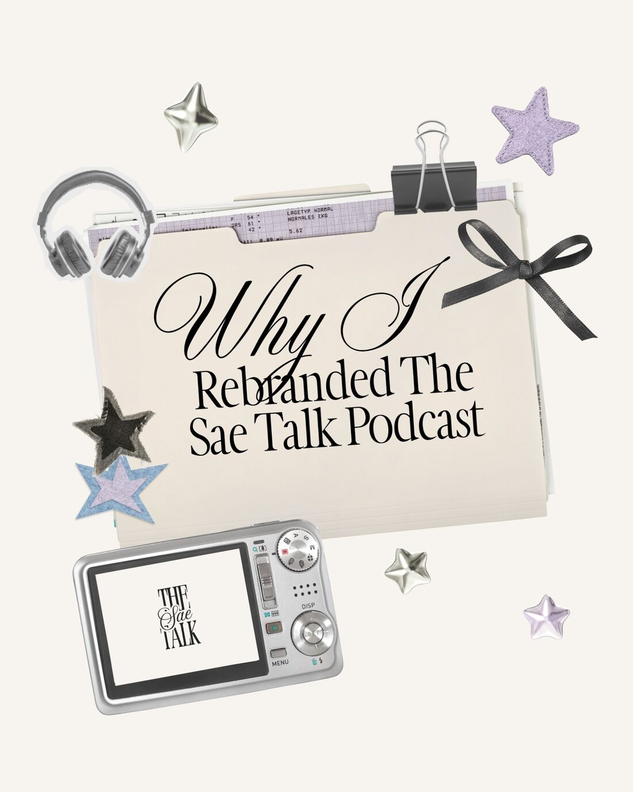

Campaigns, content, and the work behind them.
Marketing and Creative Professional
I work across marketing and creative production. I founded Thy Academia, a study and student mental health blog, where I wrote, designed, and managed social media. My recent work includes campaign concepts and competitor research for a streetwear brand. I'm building my skills in brand identity and web design, and I write in English and Arabic.
- LanguagesArabic (native), English (C2)
- CurrentlyDigital Marketing Intern, DAXUEN
- Based inEgypt, working remotely
Featured projects
Thy Academia
A blog on study life and student mental health, with writing, editorial planning, and social media.

The Sae Talk
An independent podcast with its own typographic identity. Concept, production, and design.
Writing on Substack
Essays on personal development and reflection.
[CONFIRM] permission to publish
DAXUEN campaign concepts
Editorial imagery and video concepts for a streetwear brand.
Thy Academia
A blog on study life and student mental health, with writing, editorial planning, and social media.
[PENDING] Bellabelles Egypt or other work
Social media design
Product visuals, carousels, and stories.
Roles and experience
Case studies, a timeline of roles, certifications, and a CV you can download.
Freelance projects
Social media design, carousels, short-form editing, content planning, creative concepts, and research.